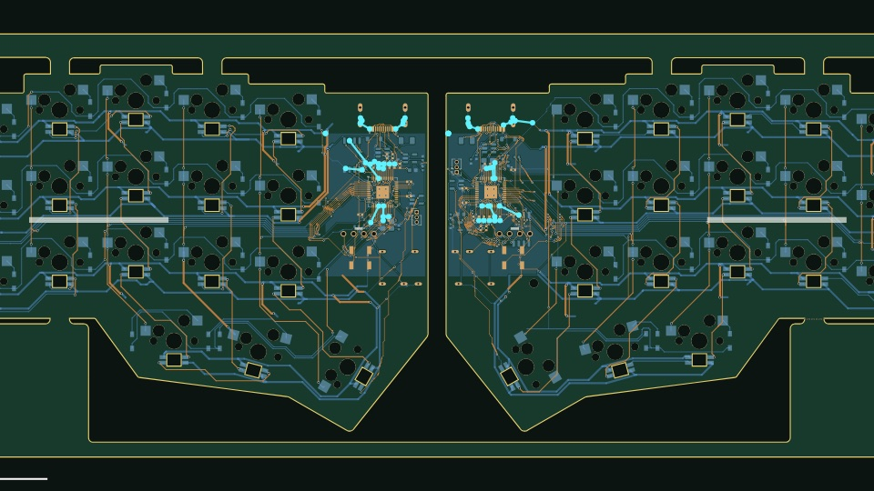

让 agent 走完硬件的整条链：查手册、选有货的料、算参数、画原理图和 PCB、做配得上板子的外壳，导出嘉立创下单包。
试做案例展开题目、模型提交、自动检查、复核和审计；新题源案例追踪上游修订与待验证的条件。配图包含 KiCad / STEP 原生文件渲染和证据示意图，问题出在哪就放大到哪。
看全部案例 →
文档页是 claude.ai artifact 的副本，正文没改，只补了页头，并把互相引用的链接换成站内链接。各页的 sha256 在 manifest.json。